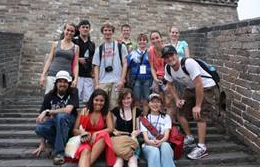
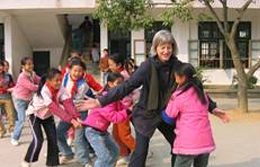
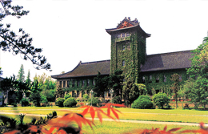
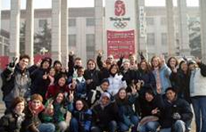

Study in China With USCEC
This is what many people think of China: a long history, unique culture, booming economy ... It has become the hot spot for studying abroad.
Traveling with us to China and studying meaningful courses in real sites, students will be observing social, cultural and economic transformations as they are unfolding, all while enjoying China's tasty food, beautiful scenery and friendly people. It is the experience of a lifetime.
The USCEC helps colleges and schools organize summer study-and-travel programs in China, the length of which can vary from two weeks to one month from mid May to late August. Since 2002, we have taken hundreds of American students to China.
With our summer in China programs, students will gain an invaluable experience of international education through a meaningful combination of the following:
- Teaching in real sites on Chinese history, society, culture, business and language;
- Carefully-planned excursions to famous cities of:
- Beijing,
- Xi'an,
- Nanjing,
- Suzhou, &
- Shanghai
- Visits to Chinese businesses, government organizations and NGO's; &
- Side trips to Hong Kong, Tibet, Yellow Mountain, Guilin and Yangzhou.
The program is open to students from any high schools and colleges in the U.S. and Canada.
For information on the program you want and courses to be offered, contact us via email at UsChinaEducation@yahoo.com
For information about the sites students visit in those cities with our summer program, check the China Tours page at this website.
Here below is how the program works in general:
Our major program base is Nanjing University, in Nanjing, by the famous Yangtze River, a bit over one hour away from Shanghai by high-speed trains.
Before arriving in Nanjing, students start with tours in Beijing and Xi'an so as to get a good sense of Chinese history, economy and society. Following that, the program stays in Nanjing for about 1-3 weeks to have classes and side trips (if they so choose). After Nanjing, the travel agencies will take students on tours to Suzhou, and finally students conclude their study-in-China-program in Shanghai.
Studying at Nanjing University
Nanjing is a famous historical city, with rich cultural heritage. It was the capital of 10 ancient dynasties. The city is well known for its beautiful scenic sites, food, and hospitable people. It is also a very important education center of China, with dozens of prestigious colleges and universities, with Nanjing University being one of the top five universities in China.
In Nanjing, the program stays in a very comfortable hotelon the campus of Nanjing University and close to many other universities. It is right in the center of the city, in an area with many restaurants, tea houses, coffee shops, bookstores, museums, Buddhist and Daoist temples, hospitals, supermarkets, up-scale shopping malls, cinemas, and nightclubs.
